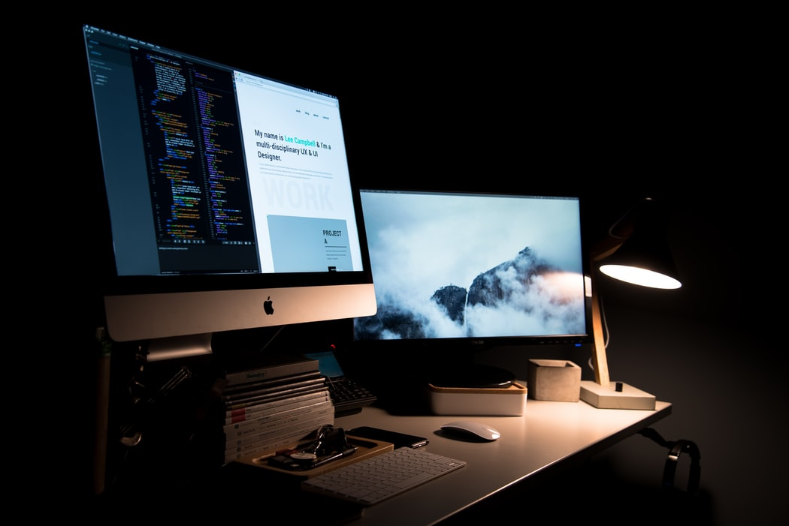

UX designers explore many different approaches to solving a specific user problem. The broad responsibility of a UX designer is to ensure that the product logically flows from one step to the next. One way that a UX designer might do this is by conducting in-person user tests to observe one’s behavior. By identifying verbal and non-verbal stumbling blocks, they refine and iterate to create the “best” user experience.

An example project is creating a delightful onboarding flow for a new user. “Define interaction models, user task flows, and UI specifications. Communicate scenarios, end-to-end experiences, interaction models, and screen designs to stakeholders. Work with our creative director and visual designers to incorporate the visual identity of Twitter into features. Develop and maintain design wireframes, mockups, and specifications as needed.”